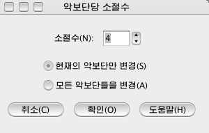

악보단당 소절수를 변경합니다. <악보\악보페지양식설정\악보단당
소절수...>차림표를 선택하면 <악보단당 소절수>대화창이 표시됩니다.

- 소절수 : 악보단당 소절수를 설정합니다.
- 현재의 악보단만 변경 : 이 항목을 선택하면 유표가 놓인 악보단의 소절수만을
변경합니다. 악보단의 소절수를 변경하려면 <소절\악보단의 소절수 증가>, <악보단의 소절수 감소>차림표를 리용하여도 됩니다.
- 모든 악보단들을 변경 : 이 항목을 선택하면 모든 악보단의 소절수를 변경합니다.
- 확인 : 이 단추를 누르면 악보단의 소절수를 설정한대로
변경합니다.
 이때 악보의 총 소절수는 달라지지 않기때문에 제일 마지막 악보단의 페지양식이 달라집니다.
이때 악보의 총 소절수는 달라지지 않기때문에 제일 마지막 악보단의 페지양식이 달라집니다.
- 취소 : 이 단추를 누르면 악보단의 소절수를 변경하지
않고 원래 악보화면으로 돌아옵니다.